Tools for working with COVID-19 Forecast Hub data: a brief tour of the covidHubUtils R package
Serena Wang, Evan L Ray, Nicholas G Reich, Apurv Shah
16 June 2022
Source:vignettes/covidHubUtils-overview.Rmd
covidHubUtils-overview.RmdIntroduction and background
The COVID-19 Forecast Hub is a central repository for modeler-contributed short-term forecasts of COVID-19 trends in the US. The US Centers for Disease Control and Prevention (CDC) displays forecasts from the Forecast Hub on its modeling and forecasting webpages.
The Forecast Hub has been curating forecast data since April 2020, and has collected over 150 million unique rows of forecast data. These data are stored in our public GitHub repository and in the Zoltar forecast archive.
The goal of the covidHubUtils R package is to create a set of basic utility functions for accessing, visualizing, and scoring forecasts from the COVID-19 Forecast Hub.
Installation and set-up
The covidHubUtils package relies on a small number of packages, including many from the tidyverse and, importantly, the zoltr package that is used to access the Zoltar API for downloading forecasts. Please install zoltr from GitHub, as this development version often has important features not yet on the CRAN version:
devtools::install_github("reichlab/zoltr")The covidHubUtils package currently is only available on GitHub, and it may be installed using the devtools package:
devtools::install_github("reichlab/covidHubUtils")Working with forecast data
One of the key features of the COVID-19 Forecast Hub is making millions of rows of forecast data available in a standard format for easy analysis and visualization. The covidHubUtils package allows for users to download data into an R session either by reading files from a local clone of the COVID-19 Forecast Hub repository or by downloading data from the Zoltar API. (While Zoltar currently requires a user account to download data via the API, we have created a specific user account for covidHubUtils so that a user account is not needed.)
We have identified two central use cases for downloading data using load_forecasts():
Downloading the “latest” forecasts for selected models that might be submitted in a short period of time. This is achieved by using
datesanddate_window_sizeparameters.Downloading all available forecasts for selected models that are submitted on a set of dates. This is achieved by using a vector of dates in
datesparameter.
Below are some examples of reading in data. We start by loading the covidHubUtils package and the tidyverse.
Load and plot single forecast
The following code loads forecasts from Zoltar for the COVIDhub-ensemble model. Note that the date_window_size parameter specifies the range of days to look at for a forecast. date_window_size will be applied to every date in dates parameter to create a list of potential forecast dates to look at. All queries below are looking for the most recent forecast from COVIDhub-ensemble in the span of 2021-03-02 through 2021-03-08. In this case, for each day in dates, date_window_size = 6 covers a full week, starting from 6 days before a date and going up through the user-provided date. By default, date_window_size is set to 0 to use all forecast dates in dates only.
We also provide examples to load incident hospitalization forecasts and incident death forecasts here by changing targets to the desired quantity.
The verbose parameter has been explicitly set to FALSE to prevent output from the internal helper function in load_forecasts(). It is set to TRUE by default and all information will be printed in the console.
# Load forecasts that were submitted in a time window from zoltar
inc_case_targets <- paste(1:4, "wk ahead inc case")
forecasts_case <- load_forecasts(
models = "COVIDhub-ensemble",
dates = "2021-03-08",
date_window_size = 6,
locations = "US",
types = c("point", "quantile"),
targets = inc_case_targets,
source = "zoltar",
verbose = FALSE,
as_of = NULL,
hub = c("US")
)
inc_hosp_targets <- paste(0:130, "day ahead inc hosp")
forecasts_hosp <- load_forecasts(
models = "COVIDhub-ensemble",
dates = "2021-03-08",
date_window_size = 6,
locations = "US",
types = c("point", "quantile"),
targets = inc_hosp_targets,
source = "zoltar",
verbose = FALSE,
as_of = NULL,
hub = c("US")
)
inc_death_targets <- paste(1:4, "wk ahead inc death")
forecasts_death <- load_forecasts(
models = "COVIDhub-ensemble",
dates = "2021-03-08",
date_window_size = 6,
locations = "US",
types = c("point", "quantile"),
targets = inc_death_targets,
source = "zoltar",
verbose = FALSE,
as_of = NULL,
hub = c("US")
)Here are the top rows of the data frame from the query of incident case forecasts. In addition to the essential forecast data, a few columns with location information are also returned. Tables of the other target variables look similar. Note that one row corresponds either to a point or a single quantile prediction. Details of the underlying data format are described in detail here.
This data can then be plotted directly with a call to plot_forecasts().
p <- plot_forecasts(
forecast_data = forecasts_case,
truth_source = "JHU",
target_variable = "inc case",
intervals = c(.5, .8, .95)
)
p_hosp <- plot_forecasts(
forecast_data = forecasts_hosp,
truth_source = "HealthData",
target_variable = "inc hosp",
intervals = c(.5, .8, .95)
)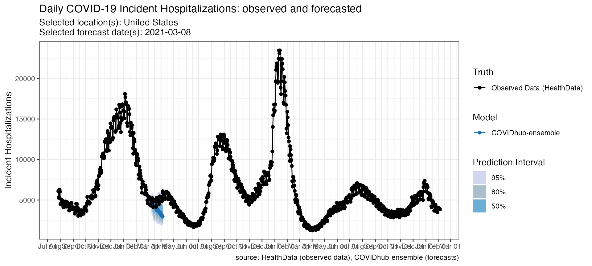
p_death <- plot_forecasts(
forecast_data = forecasts_death,
truth_source = "JHU",
target_variable = "inc death",
intervals = c(.5, .8, .95)
)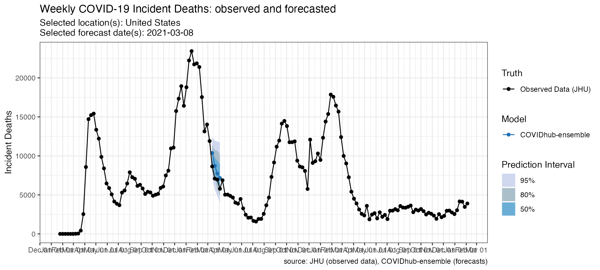 Additionally, you could also modify the resulting plot object by adding ggplot components. For example, if you want to change the way the x-axis handles dates, you could add a ggplot2::scale_x_date() specification:
p + scale_x_date(name = NULL, date_breaks = "1 month", date_labels = "%b") +
theme(axis.ticks.length.x = unit(0.5, "cm"), axis.text.x = element_text(vjust = 7, hjust = -0.2))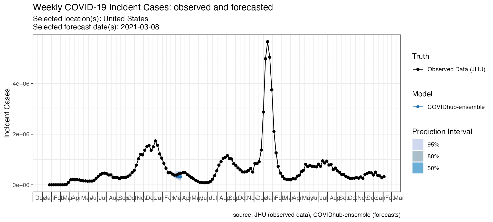
Versioned forecasts
load_forecasts() could also load previous versions of forecasts from Zoltar by using as_of parameter. This parameter accepts a date in YYYY-MM-DD format to load forecasts submitted as of this date. It defaults to NULL to load the latest version. It is useful to compare the changes implemented in the forecasts.
# Load forecasts that were submitted in a time window from zoltar
previous_forecasts <- load_forecasts(
models = "Columbia_UNC-SurvCon",
dates = "2021-01-03",
source = "zoltar",
as_of = "2021-01-04",
targets = inc_death_targets,
verbose = FALSE,
location = "US"
)
new_forecasts <- load_forecasts(
models = "Columbia_UNC-SurvCon",
dates = "2021-01-03",
source = "zoltar",
targets = inc_death_targets,
verbose = FALSE,
location = "US"
)The data frame and the plot below shows the difference between these two versions of forecasts.
p_as_of <- plot_forecasts(
forecast_data = previous_forecasts,
truth_source = "JHU",
target_variable = "inc death",
intervals = c(.5, .8, .95)
)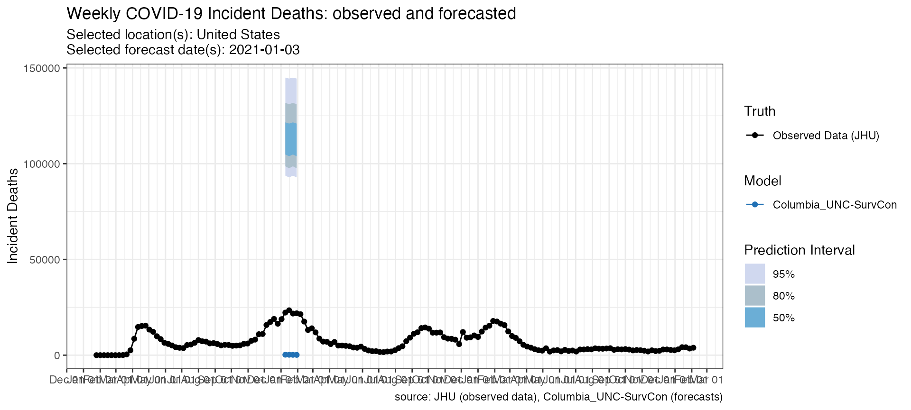
p_correct <- plot_forecasts(
forecast_data = new_forecasts,
truth_source = "JHU",
target_variable = "inc death",
intervals = c(.5, .8, .95)
)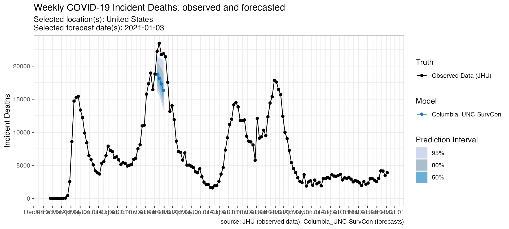
Query the US or the European Forecast Hubs
The hub parameter is useful to load forecasts submitted to a particular forecast hub. This parameter takes a character vector, where the first element indicates the hub to load forecasts from. Currently, it supports “US” and “ECDC”.
Here is an example for loading forecasts from the European Forecast Hub (ECDC).
# Load forecasts that were submitted in a time window from zoltar
inc_case_targets <- paste(1:4, "wk ahead inc case")
forecasts_ECDC <- load_forecasts(
models = c("ILM-EKF"),
hub = c("ECDC", "US"),
dates = "2021-03-08",
date_window_size = 0,
locations = c("GB"),
targets = paste(1:4, "wk ahead inc death"),
source = "zoltar",
verbose = FALSE
)
datatable(forecasts_ECDC,
extensions = "FixedColumns",
options = list(
dom = "t", scrollX = TRUE,
fixedColumns = list(leftColumns = 2)
)
)
p_ECDC <- plot_forecasts(
forecast_data = forecasts_ECDC,
truth_source = "JHU",
target_variable = "inc death",
intervals = c(.5, .8, .95),
hub = c("ECDC")
)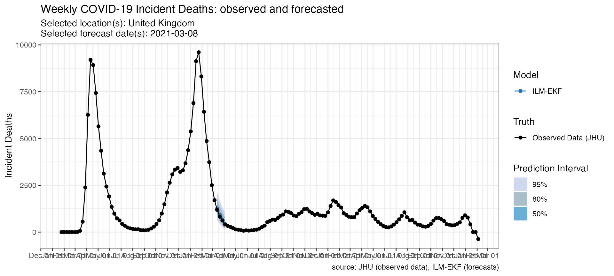
Plot multiple models
Some additional arguments in plot_forecasts() are helpful for creating a reasonable plot if forecast_data has multiple locations, forecast dates or models.
The following code looks at three models’ forecasts of incident deaths at one time point for one location. Note the use of the fill_by_model option which allows colors to vary by model and the facet command which is passed to ggplot.
fdat <- load_forecasts(
models = c("Karlen-pypm", "UMass-MechBayes", "CU-select"),
dates = "2021-03-08",
source = "zoltar",
date_window_size = 6,
locations = "US",
types = c("quantile", "point"),
verbose = FALSE,
targets = paste(1:4, "wk ahead inc death")
)
p <- plot_forecasts(fdat,
target_variable = "inc death",
truth_source = "JHU",
intervals = c(.5, .95),
facet = . ~ model,
fill_by_model = TRUE,
plot = FALSE
)
p +
scale_x_date(name = NULL, date_breaks = "1 months", date_labels = "%b") +
theme(
axis.ticks.length.x = unit(0.5, "cm"),
axis.text.x = element_text(vjust = 7, hjust = -0.2)
)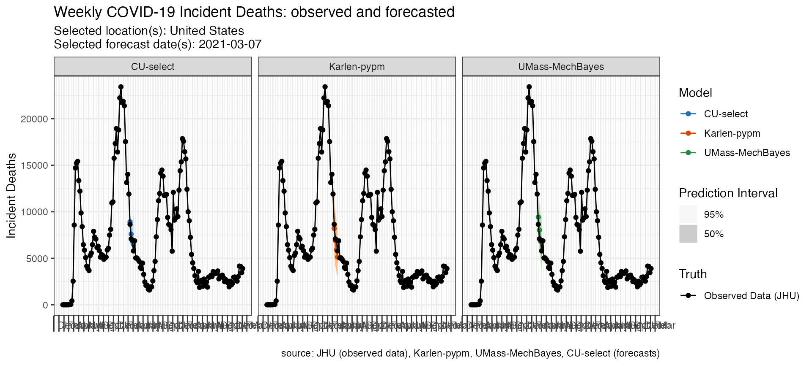
Plot multiple models and locations
The following code looks at three models’ forecasts of incident deaths for multiple locations submitted at the same forecast time point. Note the use of the facet_scales option which is passed to ggplot and allows the y-axes to be on different scales.
fdat <- load_forecasts(
models = c("Karlen-pypm", "UMass-MechBayes", "CU-select"),
dates = "2021-03-08",
source = "zoltar",
date_window_size = 6,
locations = c("19", "48", "46"),
types = c("quantile", "point"),
verbose = FALSE,
targets = paste(1:4, "wk ahead inc death")
)
p <- plot_forecasts(fdat,
target_variable = "inc death",
intervals = c(.5, .95),
truth_source = "JHU",
facet = location ~ model,
facet_scales = "free_y",
fill_by_model = TRUE,
plot = FALSE
)
p +
scale_x_date(name = NULL, date_breaks = "1 months", date_labels = "%b") +
theme(
axis.ticks.length.x = unit(0.5, "cm"),
axis.text.x = element_text(vjust = 7, hjust = -0.2)
)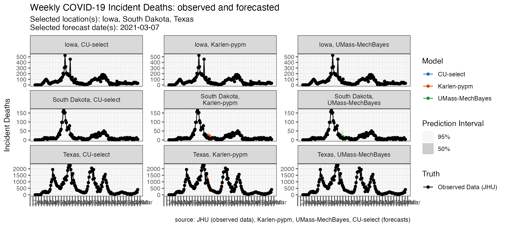
Plot multiple forecast dates
The following code looks at two models’ forecasts of incident deaths for the same location at three different forecast time points.
fdat <- load_forecasts(
models = c("Karlen-pypm", "UMass-MechBayes"),
dates = seq.Date(as.Date("2020-12-13"), as.Date("2021-03-14"), by = "28 days"),
locations = "US",
types = c("quantile", "point"),
targets = paste(1:4, "wk ahead inc death"),
verbose = FALSE
)
p <- plot_forecasts(fdat,
target_variable = "inc death",
truth_source = "JHU",
intervals = c(.5, .95),
facet = . ~ model,
fill_by_model = TRUE,
plot = FALSE
)
p + scale_x_date(name = NULL, date_breaks = "1 months", date_labels = "%b") +
theme(
axis.ticks.length.x = unit(0.5, "cm"),
axis.text.x = element_text(vjust = 7, hjust = -0.2)
)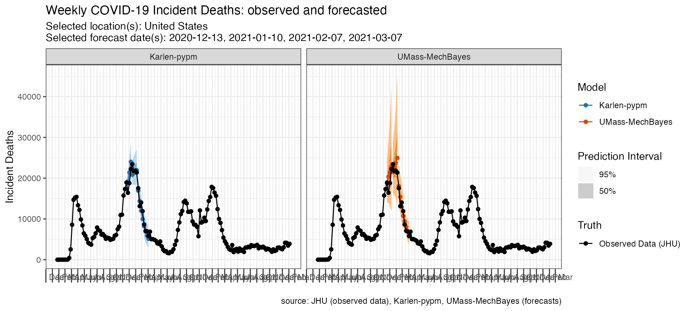
Working with truth data
By default plot_forecasts() uses JHU CSSE data as the “Observed Data” in the above plots. However, users can specify custom “ground truth” data that either they provide themselves or that is loaded in from the package.
Here is an example of a call to plot_forecasts() that simply specifies an alternate truth source, which must be one of “JHU”, “HealthData” or “NYTimes”.
plot_forecasts(
forecast_data = forecasts_case,
target_variable = "inc case",
locations = "US",
truth_source = "NYTimes",
intervals = c(.5, .8, .95)
)Alternatively, truth data can be loaded in from one of those sources independently and stored in your active R session and passed to the plot_forecasts() function.
truth_data <- load_truth(
truth_source = "JHU",
target_variable = "inc case",
locations = "US"
)Truth data comes in the following tabular format.
And can be used in conjunction with a call to plot_forecasts()
plot_forecasts(
forecast_data = forecasts_case,
target_variable = "inc case",
truth_data = truth_data,
truth_source = "JHU",
intervals = c(.5, .8, .95)
)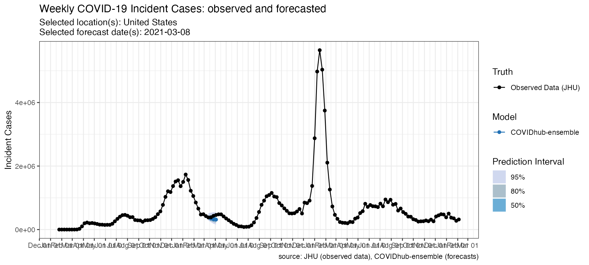
Working with scored forecasts
In addition to querying forecasts and truth data, covidHubUtils has the capability to evaluate the forecasts based on metrics including the prediction interval coverage at any provided quantiles, the absolute error based on a median estimate, the weighted interval score (WIS) of the forecast, and a component-wise breakdown of WIS into dispersion, overprediction and underprediction.
These scores could be used to compare the accuracy and precision of forecasts across models, locations, horizons, and submission weeks. You can access the evaluation paper to read an in-depth explanation about the methodologies.
To find the most recent weekly forecast evaluation summary, please visit the evaluation reports page and the Forecast Evaluation Dashboard built by the CMU Delphi team and the COVID-19 Forecast Hub.
Score forecasts
The inputs to the scored_forecasts() include a forecasts data frame created by load_forecasts() and a truth data frame created by load_truth().
The scoringutils package provides a collection of metrics and proper scoring rules that make it simple to score forecasts against the true observed values. Please install and load the most up-to-date development version of scoringutils from GitHub:
devtools::install_github("epiforecasts/scoringutils")
library(scoringutils)The following code scores forecasts by the corresponding truth data loaded earlier in this vignette in long format. This is the example for the US Forecast Hub:
inc_case_targets <- paste(1:4, "wk ahead inc case")
truth_data <- load_truth(
truth_source = "JHU",
target_variable = "inc death",
locations = "US"
)
forecasts_multiple <- load_forecasts(
models = c("COVIDhub-baseline", "COVIDhub-ensemble"),
dates = as.Date("2020-12-15") + seq(0, 35, 7),
# for each date in `dates`, also look at the day before it
date_window_size = 1,
locations = "US",
types = c("point", "quantile"),
targets = paste(1:4, "wk ahead inc death"),
source = "zoltar",
verbose = FALSE,
as_of = NULL,
hub = c("US")
)
scores <- score_forecasts(
forecasts = forecasts_multiple,
return_format = "wide",
truth = truth_data
)
datatable(scores,
extensions = "FixedColumns",
options = list(
dom = "t", scrollX = TRUE,
fixedColumns = list(leftColumns = 2)
)
)This is the example for European Forecast Hub:
truth <- load_truth("JHU",
hub = c("ECDC", "US"),
target_variable = "inc death",
locations = "GB"
)
scores_ECDC <- score_forecasts(
forecasts = forecasts_ECDC,
return_format = "wide",
truth = truth
)
datatable(scores_ECDC,
extensions = "FixedColumns",
options = list(
dom = "t", scrollX = TRUE,
fixedColumns = list(leftColumns = 2)
)
)Visualize forecast scores
We use plotting functions from scoringutils to visualize different scoring metrics.
Heatmaps are a great way to visualize your data over a large number of models. The following code provides a skeleton for visualizing the WIS score of multiple models over the 4 horizons:
scores %>%
dplyr::group_by(model, horizon) %>%
dplyr::summarise(wis = mean(wis)) %>%
scoringutils::plot_heatmap(metric = "wis", x = "horizon")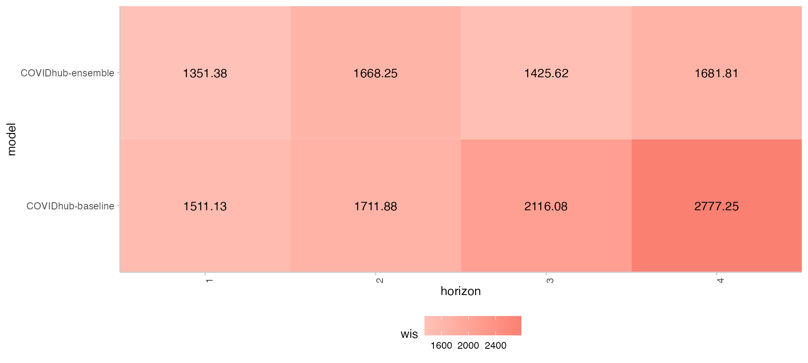
The following snippet of code produce a bar plot for WIS score components in absolute values for selected models. Each bar is divided based on the percentage of each component’s contribution to the total WIS score.
scores %>%
dplyr::group_by(model) %>%
dplyr::summarise(
dispersion = mean(dispersion),
overprediction = mean(overprediction),
underprediction = mean(underprediction)
) %>%
data.table::as.data.table()%>%
data.table::melt(.,
measure.vars = c("overprediction",
"underprediction",
"dispersion"),
variable.name = "wis_component_name",
value.name = "component_value")%>%
ggplot2::ggplot(., ggplot2::aes_string(x = "model")) +
ggplot2::geom_col(position = "stack",
ggplot2::aes(y = component_value, fill = wis_component_name)) +
ggplot2::labs(x = "model", y = "WIS contributions") +
ggplot2::theme_light() +
ggplot2::theme(panel.spacing = ggplot2::unit(4, "mm"),
axis.text.x = ggplot2::element_text(angle = 90,
vjust = 1,
hjust=1))The following snippet of code provides a line graph of coverage rate for each prediction interval range.
scores %>%
tidyr::pivot_longer(cols = dplyr::starts_with("coverage")) %>%
dplyr::rename(range = name, coverage = value) %>%
dplyr::group_by(model, range) %>%
dplyr::summarise(coverage = mean(coverage)) %>%
dplyr::mutate(range = as.numeric(sub("coverage_", "", range))) %>%
scoringutils::plot_interval_coverage()